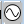
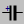
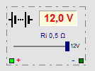
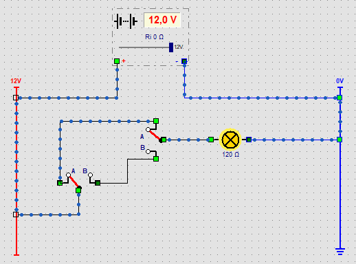
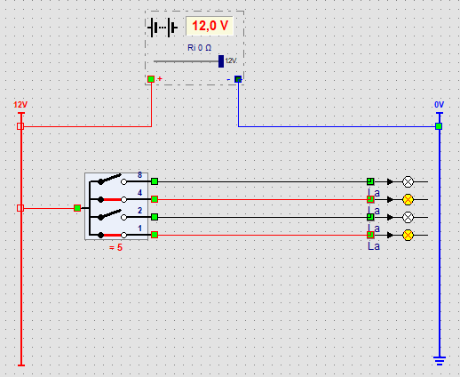

Normalement, tous les composants reçoivent leur alimentation de façon invisible, en arrière-plan (voir Où sont le plus et le moins ?). Pour voir d’où vient le courant, construisez un circuit d’alimentation : une source (batterie) de 0 à 12 V, éventuellement un fusible et un milliampèremètre, un rail + rouge pour les entrées et un rail − bleu (la masse) pour les sorties. Avec le voltmètre, vous mesurez la tension.
En bas de la barre des composants se trouvent cinq demi-boutons ; le milliampèremètre a un bouton normal, à côté du voltmètre.
| Bouton | Nom | Qu’est-ce que c’est ? |
|---|---|---|
 | Rail + (alimentation) | Rail rouge pour les entrées. En haut s’affiche la tension qu’il reçoit de la source, par exemple 5V. |
 | Rail − (masse) | Rail bleu avec 0V en haut et le symbole de masse en bas. |
 | Source (batterie) | Source de tension de 0 à 12 V. |
 | Source alternative | Tension qui change de sens comme une sinusoïde (ralentie : 0,5 à 2 Hz). |
 | Fusible | Fond quand le courant est trop fort. |
 | Milliampèremètre | Mesure le courant consommé par le circuit. |
 | Wattmètre | Mesure la puissance P = U × I de tout ce qui suit. |
 | Oscilloscope | Trace la tension dans le temps, en vert. |
 | Résistance (contact) | Un contact ou un fil avec une petite résistance : une partie de la tension est perdue. |
 | Potentiomètre | Résistance avec un curseur et trois bornes : un diviseur de tension réglable. |
 | LDR | Photorésistance : plus il y a de lumière, plus la résistance est faible. |
 | CTN | Thermistance : plus il fait chaud, plus la résistance est faible. |
 | LED à 2 bornes | Ne conduit que dans un sens ; va avec une résistance série. |
 | Diode | Ne laisse passer le courant que dans un sens, au-dessus de 0,7 V. |
 | Condensateur | Se charge et se décharge dans le temps. |
| Transistor | Un petit courant de base commande un grand courant de collecteur : commuter et amplifier. | |
 | Aimant droit | Aimant avec un pôle nord (rouge) et un pôle sud (bleu), sans bornes. |
 | Boussole | Une aiguille qui s’oriente le long du champ magnétique. |
 | Plaque de lignes de champ | Montre les lignes de champ des aimants posés dessus, comme de la limaille de fer. |
 | Bobine | Bobine à spires dans le circuit : parcourue par un courant, elle devient un aimant. |
 | Clou | Un morceau de fer : un aimant ou une bobine parcourue par un courant l’attire. |
 | Relais (modèle ouvert) | Une bobine sur un noyau, une armature avec un ressort et trois contacts : un relais vu de l’intérieur. |
 | Balançoire électrique | Une tige de cuivre entre les pôles d’un aimant en U : avec un courant, elle s’écarte (force de Lorentz). |
 | Moteur électrique (modèle) | Une bobine qui tourne entre deux pôles, avec collecteur et balais. |
Vous pouvez placer autant de rails que vous voulez, par exemple un rail séparé pour chaque partie du circuit.
Les rails reçoivent leur tension uniquement d’une source. Reliez avec
 Connexion :
Connexion :
Un fusible et un milliampèremètre se placent en série dans le fil + : de la source vers la borne du haut du fusible, puis de sa borne du bas vers le milliampèremètre ou vers le rail +.
Quand le circuit est fermé, la tension de la source est sur le rail +. Quand il n’est pas fermé (un fil manque ou le fusible a fondu), le rail + est à 0 V : les entrées ne donnent pas de signal et les sorties ne fonctionnent pas.
La source (batterie)
Chaque récepteur allumé se comporte comme une résistance fixe. À 12 V, il consomme :
| Récepteur (allumé) | Courant à 12 V |
|---|---|
| lampe | 100 mA |
| moteur (en marche) | 200 mA |
| relais ou relais de commutation (bobine excitée) | 40 mA |
| buzzer | 30 mA |
| LED, personnage (par entrée activée) | 20 mA |
| afficheur 7 segments | 10 mA par segment allumé |
| porte, compteur, mémoire, LogicRun, entrée branchée | 1 mA |
À une tension plus basse, le courant diminue dans la même proportion : une lampe consomme 50 mA à 6 V. Le courant de la source est la somme de tous les récepteurs. Avec la résistance interne Ri de la source, on obtient :
I = E / (Ri + R) et U = E − I × Ri
R est la résistance de tous les récepteurs ensemble (en parallèle). Plus il y a de récepteurs allumés, plus le courant est grand et plus la tension aux bornes U baisse. Les lampes et les LED brillent plus fort quand la tension d’alimentation augmente.
En électricité, quatre grandeurs reviennent toujours :
| Grandeur | Symbole | Unité |
|---|---|---|
| tension | U | volt (V) |
| intensité (courant) | I | ampère (A) ; 1 A = 1000 mA |
| résistance | R | ohm (Ω) |
| puissance | P | watt (W) |
La loi d’Ohm relie la tension, le courant et la résistance. Si vous en connaissez deux, vous calculez la troisième. La puissance est la tension fois le courant. Les triangles aident à trouver la formule :

| Vous cherchez | Formule | Exemple |
|---|---|---|
| la tension | U = I × R | 0,1 A × 120 Ω = 12 V |
| le courant | I = U / R | 6 V / 120 Ω = 0,05 A = 50 mA |
| la résistance | R = U / I | 12 V / 0,1 A = 120 Ω |
| la puissance | P = U × I | 12 V × 0,1 A = 1,2 W |
| la puissance (avec R et I) | P = I × I × R | 0,240 A × 0,240 A × 10 Ω = 0,58 W |
| la puissance (avec U et R) | P = U × U / R | 6 V × 6 V / 120 Ω = 0,3 W |
À 12 V, une lampe consomme 100 mA. Sa résistance vaut R = U / I = 12 V / 0,1 A = 120 Ω et sa puissance P = U × I = 12 V × 0,1 A = 1,2 W.
Réglez la source sur 6 V : la résistance reste 120 Ω. Le courant devient I = U / R = 6 V / 120 Ω = 0,05 A et la puissance P = U × I = 6 V × 0,05 A = 0,3 W. La moitié de la tension donne la moitié du courant, mais seulement un quart de la puissance. C’est pourquoi une lampe à demi-tension éclaire beaucoup moins.
Déplacez la tension de la source. À 0 V, les électrons sont immobiles : ils sont toujours dans le fil, mais rien ne les pousse. Plus la tension est haute, plus la source pousse fort : plus d'électrons par seconde traversent le fil, le courant I augmente et la lampe brille plus fort. La loupe montre un morceau de fil de cuivre : les atomes de cuivre gris restent en place, les électrons bleus avancent.
Une source de tension alternative fonctionne comme la source, mais sa tension change de sens comme une sinusoïde : une borne est tour à tour + puis −. Le curseur règle la valeur de crête (0 à 12 V) ; l’affichage montre la tension de l’instant, avec son signe. Le secteur change 50 fois par seconde (50 Hz), trop vite pour le voir. C’est pourquoi la source est ici ralentie : clic droit › Fréquence 0,5, 1 ou 2 Hz. Le temps n’avance que pendant la simulation.
Le fusibleUn fusible protège le circuit : quand le courant dépasse le courant nominal, le filament fond. Une croix rouge apparaît et le rail + retombe à 0 V.
Le milliampèremètreLe milliampèremètre mesure le courant qui traverse le circuit, en mA. Placez-le en série dans le fil +, entre la source (ou le fusible) et le rail + : le fil entre à gauche et repart à droite. Un milliampèremètre qui n’est pas dans un circuit fermé affiche 0.
Le wattmètreLe wattmètre mesure la puissance en watts, comme une prise wattmètre entre la prise murale et un appareil. Placez-le en série, comme le milliampèremètre : le fil entre à gauche et repart à droite. Il mesure le courant qui le traverse et la tension de sa sortie jusqu’au − de la source, et affiche P = U × I : la puissance de tout ce qui est branché après lui. Placé entre deux lampes en série, il ne mesure que la lampe qui suit. Voir la leçon 32.
L’oscilloscopeUn oscilloscope est un voltmètre qui écrit : il trace la tension entre sa borne + (à gauche) et sa borne − (à droite) dans le temps, sous forme d’une trace verte. La mesure la plus récente est à droite ; la ligne zéro passe au milieu, au-dessus la tension est positive, en dessous négative. Il ne consomme pas de courant et ne mesure que pendant la simulation. Clic droit › Calibre (± 5 ou ± 12 V), Base de temps (2, 4 ou 8 s sur tout l’écran) ou Effacer l’écran. Vous voyez ainsi par exemple la sinusoïde d’une source alternative, et ce qu’il en reste après une diode.
La résistance (contact)Chaque fil et chaque contact a une petite résistance. Quand le courant le traverse, un peu de tension est perdue : la chute de tension U = I × R. Cette tension n’arrive pas aux récepteurs, et le contact chauffe : P = I × I × R.
Placez la résistance en série dans le fil + (ou le fil −), comme le milliampèremètre : le fil entre à gauche et repart à droite. Clic droit › Type :
| Type | Résistance | Où le voit-on ? |
|---|---|---|
| bon contact | 0,05 Ω | une borne bien serrée |
| long fil fin | 1 Ω | un câble trop fin vers une lampe éloignée |
| mauvais contact | 2 Ω | une borne desserrée ou oxydée (par défaut) |
| contact brûlé | 10 Ω | une borne devenue trop chaude |
| résistance série | 100, 220, 470, 1000 Ω, 2,2, 4,7, 10, 47 ou 100 kΩ | une vraie résistance, p. ex. en série avec une LED ou avant la base d’un transistor |
Le bloc devient orange puis rouge à mesure qu’il chauffe. Mesurez la chute de tension avec un voltmètre : + sur la borne du côté de la source, − sur l’autre borne. Voir la leçon 24.
Le groupe Alimentation de la barre des composants contient aussi trois composants à deux bornes. Avec eux, vous construisez vous-même un circuit avec des lampes en série ou en parallèle, sans rails. Logic calcule tout le circuit avec les lois de Kirchhoff : la tension sur chaque borne et le courant dans chaque composant.
Vous voulez deux fils sur la même borne ? Cliquez sur Connexion puis sur la borne, même s’il y a déjà un fil : un nouveau fil commence. Voir la leçon 25.
 Le commutateur va-et-vient
Le commutateur va-et-vientUn commutateur va-et-vient a trois bornes : le milieu (en bas) et les contacts A (à gauche) et B (à droite). Le levier pivote au milieu et touche toujours A ou B ; chaque clic bascule. Il n’est donc jamais complètement ouvert : le courant prend simplement un autre chemin. Vous pouvez le faire pivoter comme les autres composants.
Deux commutateurs font le circuit d’un escalier ou d’un long couloir : vous allumez et éteignez depuis deux endroits. Le milieu de l’un vient du rail +, le milieu de l’autre va à la lampe, et entre les deux vous reliez A à A et B à B. La lampe est allumée quand les deux commutateurs sont sur la même lettre ; basculez-en un et la lampe change toujours, quelle que soit la position de l’autre.

 Le générateur d’impulsions
Le générateur d’impulsionsUn interrupteur qui s’ouvre et se ferme tout seul, comme un relais clignotant. Placez-le entre le rail + et une entrée (un compteur, une lampe ou une porte) : il donne des impulsions de pleine tension. Clic droit › Fréquence pour choisir de 0,5 à 5 Hz. Cliquez sur le boîtier pour le mettre en marche ou l’arrêter (aussi pendant la simulation) ; il démarre arrêté. Dans le boîtier, vous voyez le contact s’ouvrir et se fermer.
 L’interrupteur DIP
L’interrupteur DIPQuatre petits interrupteurs dans un boîtier, avec cinq bornes : à gauche la borne commune, à relier au rail +, à droite les sorties 8, 4, 2 et 1. Cliquez sur un curseur pour le changer : s’il est activé (rouge), la pleine tension est sur cette sortie. En bas, vous voyez le nombre (0 à 15).

Le potentiomètreUn potentiomètre est une résistance avec un curseur : un contact que l’on fait glisser le long de la résistance. Il a trois bornes : les extrémités A (à gauche) et B (à droite), et le curseur L (en bas). Entre A et B se trouve toujours toute la résistance ; le curseur la partage en deux : R(A–L) = R × position et R(L–B) = R × (100 % − position).
Faites glisser le bouton bleu avec la souris, de 0 à 100 %. Clic droit › Valeur : 470 Ω, 1 kΩ, 4,7 kΩ ou 10 kΩ. Reliez A au + et B au − : le curseur porte alors U × (100 % − position), un diviseur de tension réglable. Voir la leçon 33.
La LED à deux bornesUne LED (diode électroluminescente) n’est pas une lampe : elle ne laisse passer le courant que dans un sens, de la borne + (anode, à gauche) vers la borne − (cathode, à droite). Et elle ne conduit qu’au-dessus de sa tension de seuil : rouge 1,8 V, jaune 2,0 V, vert 2,2 V, bleu 3,0 V (clic droit › Couleur).
Au-dessus du seuil, le courant monte très vite. Une LED donne toute sa lumière à 20 mA et est grillée au-dessus de 30 mA. Branchée directement sur 12 V, elle grille aussitôt (clic droit › Remplacer la LED). C’est pourquoi on met toujours une résistance série avec elle (la résistance, type résistance série). Elle prend le reste de la tension :
R = (Usource − ULED) / I = (12 V − 1,8 V) / 0,020 A = 510 Ω → prenez 470 Ω
Retournez la LED et elle reste éteinte : aucun courant ne passe, et le voltmètre montre toute la tension aux bornes de la LED.
La diodeUne diode ne laisse passer le courant que dans un seul sens : de l’anode A (à gauche) vers la cathode K (à droite, côté barre). Dans ce sens, elle conduit au-dessus de 0,7 V, et il reste alors environ 0,7 V à ses bornes. Dans l’autre sens, elle bloque : aucun courant ne passe, même à 12 V. Quand elle conduit, le triangle devient rouge saumon ; quand elle bloque, il est gris. Une diode supporte jusqu’à 1 A ; au-delà, elle grille (clic droit › Remplacer la diode). Clic droit › Retourner échange A et K sans défaire les fils.
Un condensateur stocke de la charge, un peu comme une petite batterie rechargeable. Sous tension, il se charge ; retirez la source et il rend sa charge : il se décharge. Cela ne se fait pas d’un coup : plus le condensateur et la résistance sont grands, plus c’est long. La constante de temps est
τ = R × C (p. ex. 1000 Ω × 1000 µF = 1 s)
Après τ secondes, le condensateur est chargé ou déchargé à environ 63 %, après 5 τ presque entièrement. La borne + est à gauche. La zone bleue entre les plaques montre son niveau de charge, et sa tension est affichée sous le symbole. Clic droit › Capacité : 100, 470, 1000, 2200 ou 4700 µF ; Décharger le vide.
La LDR (photorésistance)Une LDR (Light Dependent Resistor) est une résistance qui diminue quand elle reçoit plus de lumière. Avec le curseur du bas, vous réglez la lumière de 0 à 100 % ; le petit écran du bas affiche la lumière, le bloc la résistance. Le bouton passe du gris (sombre) au jaune (pleine lumière).
| Lumière | 0 % | 25 % | 50 % | 75 % | 100 % |
|---|---|---|---|---|---|
| Résistance | 1 MΩ | 100 kΩ | 10 kΩ | 1 kΩ | 100 Ω |
Chaque fois que la lumière augmente de 25 %, la résistance devient dix fois plus petite. Avec une résistance fixe, on fait un diviseur de tension dont la tension varie avec la lumière ; avec un transistor, cela devient une veilleuse. Voir la leçon 40.
La CTN (thermistance)Une CTN (thermistance à Coefficient de Température Négatif, NTC en anglais) est une résistance qui diminue quand elle chauffe. Avec le curseur, vous réglez la température de 0 à 100 °C, affichée sur le petit écran ; le bouton passe du bleu (froid) au rouge (chaud).
| Température | 0 °C | 25 °C | 50 °C | 75 °C | 100 °C |
|---|---|---|---|---|---|
| Résistance | 33,6 kΩ | 10 kΩ | 3,6 kΩ | 1,5 kΩ | 0,7 kΩ |
On trouve une CTN dans les thermomètres, les chargeurs de batterie et les chaudières. Avec une résistance fixe et un transistor, vous en faites une alarme de température : voir la leçon 41.
Un transistor a trois bornes : le collecteur C (en haut), la base B (à gauche) et l’émetteur E (en bas). Un petit courant dans la base commande un courant beaucoup plus grand du collecteur vers l’émetteur. Le gain en courant β (bêta) dit combien de fois plus grand :
Ic = β × Ib (p. ex. 100 × 0,11 mA = 11 mA)
À droite du symbole figurent le type, β, l’état et les courants Ib et Ic. Le transistor est toujours dans l’un des trois états :
| État | Quand ? | Que se passe-t-il ? |
|---|---|---|
| bloqué (gris) | moins de 0,7 V entre B et E | pas de courant de base, donc pas de courant de collecteur : un interrupteur ouvert |
| amplifie (orange) | un courant de base passe | Ic = β × Ib : un petit changement à la base en donne un grand au collecteur |
| saturé (vert) | le reste du circuit laisse passer moins que β × Ib | le transistor est complètement passant ; il ne reste qu’environ 0,2 V entre C et E : un interrupteur fermé |
Clic droit › Type : NPN ou PNP. Dans un NPN, le courant entre dans la base et va de C vers E ; l’émetteur est relié au −. Dans un PNP, tout est inversé : l’émetteur est relié au +, le courant sort de la base et va de E vers C. La flèche de l’émetteur montre le sens du courant. Clic droit › Gain : β = 50, 100 ou 200.
Mettez toujours une résistance avant la base (p. ex. 10 kΩ) : entre B et E se trouve une diode qui n’a presque plus de résistance au-dessus de 0,7 V. Sans résistance, le courant de base est si grand que le transistor grille (au-dessus de 100 mA de courant de base ou de 1 A de courant de collecteur) ; clic droit › Remplacer le transistor. Voir la leçon 38 et la leçon 39.
Vous pouvez faire pivoter d’un quart de tour une résistance, une lampe, une LED, une diode, un condensateur, un interrupteur ou un fusible : clic droit › Pivoter. Un composant horizontal se met alors debout (la borne de gauche en haut, celle de droite en bas) ; le fusible se couche. Pivotez encore une fois pour revenir comme avant. Les fils sur les bornes suivent, et le courant et la tension restent les mêmes. Vous pouvez ainsi dessiner un circuit en rectangle, et des branches en parallèle côte à côte entre deux fils, comme dans un manuel. La position est enregistrée avec le panneau. Un composant verrouillé ne peut pas pivoter.
Les appareils de mesure, les sources, l’oscilloscope, le potentiomètre et le transistor ne pivotent pas : leur écran ou leur curseur doit rester lisible.
Tant qu’il n’y a aucun rail sur le panneau, tout fonctionne comme avant. Dès qu’il y a au moins un rail, les entrées et les sorties doivent être branchées :
Au lieu de brancher un composant, vous pouvez aussi le relier à un rail par un fil : voir Relier par un fil d’alimentation.
Un composant branché reçoit une fine fiche avec un point de la couleur du rail. Un composant non branché reçoit un point gris et ne fonctionne pas : une entrée ne donne pas de signal, une sortie reste éteinte et un afficheur reste sombre.
Le traitement (portes, compteur et mémoire) ne se branche pas : il reste alimenté de manière invisible.
Magnétisme : aimant droit, boussole, plaque de lignes de champ, bobine, clou, relais, balançoire électrique et moteur électriqueL’aimant droit, la boussole et la plaque de lignes de champ n’ont pas de bornes : ils ne font pas partie du circuit. On les place librement sur le panneau et on les fait glisser. Voir Qu’est-ce que le magnétisme ?
Aimant droit : le pôle nord N est rouge, le pôle sud S bleu. Clic droit : Retourner (échanger N et S) ou Pivoter (couché ou debout). Quand un deuxième aimant est proche, une flèche jaune montre la force : des pôles contraires s’attirent, des pôles semblables se repoussent.Boussole : la pointe rouge est le pôle nord de l’aiguille. Elle suit le champ à l’endroit où elle se trouve, s’éloigne d’un pôle nord et va vers un pôle sud. Sans aimant à proximité, elle indique le nord de la Terre : le haut du panneau. L’info-bulle indique combien de fois le champ des aimants y est plus fort que celui de la Terre.Plaque de lignes de champ : une feuille toujours placée sous les aimants. Elle dessine les lignes de champ de tous les aimants, comme de la limaille de fer sur du papier : à l’extérieur de l’aimant de N à S, serrées là où le champ est fort. Clic droit : Taille (petite, moyenne ou grande).Bobine (solénoïde) : elle a deux bornes et fait partie du circuit, comme une petite résistance (2, 4 ou 8 Ω). Quand un courant la traverse, elle devient un aimant, avec un champ comme celui d’un aimant droit ; N et S apparaissent sous la bobine. Un courant qui entre à gauche crée un pôle nord à droite. Clic droit : Spires (100, 200 ou 400), Noyau de fer (cinq fois plus fort), Enroulée dans l’autre sens (échanger N et S) ou Pivoter. La force est proportionnelle au courant et au nombre de spires ; l’info-bulle l’indique. Voir Le magnétisme d’une bobine.
Clou (fer, sans bornes) : un aimant ou une bobine parcourue par un courant l’attire dès que le champ est assez fort. Il glisse alors vers le pôle jusqu’à toucher l’aimant, la bobine ou un autre clou, et il y reste, même quand le courant est coupé. L’info-bulle indique le pourcentage de la force nécessaire présent à son endroit. Clic droit : Remettre en place (là où vous l’aviez posé) ou Pivoter. Voir La force d’une bobine.
Relais (modèle ouvert) : une bobine de 120 Ω sur un noyau de fer (bornes en bas), une armature sur une charnière avec un ressort, et trois contacts : à droite le contact commun C, à gauche le contact travail (en bas) et le contact repos (en haut). À partir de 35 mA dans la bobine, le noyau attire l’armature : d’abord le contact repos s’ouvre, puis le contact travail se ferme. Mettez la bobine en série avec son propre contact repos et l’armature vibre : une sonnette électrique. Voir L’électroaimant au travail.
Balançoire électrique : une tige de cuivre pend entre les pôles d’un aimant en U ; on la voit de côté. Les deux bornes sont en haut ; à droite, un dessin en biais montre la tige dans l’aimant ; le courant de la borne gauche vers la borne droite entre dans l’écran (croix). Quand un courant passe, la force de Lorentz pousse la tige de côté (flèche jaune), d’autant plus que le courant est grand. Clic droit : Retourner l’aimant ou Aimant puissant (champ deux fois plus fort). Voir La force de Lorentz.
Moteur électrique (modèle) : à gauche, la vue le long de l’axe, avec le pôle nord à gauche, le pôle sud à droite, une bobine à deux fils (croix ou point) et au centre le collecteur avec deux balais ; à droite, un dessin en biais. Électriquement, une résistance de 4 Ω ; les bornes sont en haut. Avec un courant, la bobine tourne ; la vitesse est affichée dessous. Clic droit : Retourner l’aimant ou Collecteur (décoché, la bobine reste verticale). Voir Le moteur électrique.
Logic calcule le champ avec deux pôles par aimant : chaque pôle donne un champ qui diminue avec le carré de la distance. Ce n’est pas tout à fait exact, mais la forme des lignes de champ et la direction de la boussole sont correctes.
Au lieu de brancher un composant, vous pouvez aussi le relier à un rail par un fil, comme dans un vrai circuit. Le composant peut alors se trouver n’importe où sur le panneau.
Connexion.Le point prend la couleur du rail et le composant fonctionne. Pendant la simulation, un fil venant d’un rail + devient rouge s’il y a assez de tension ; un fil vers un rail − est bleu.
Le rail + reçoit la tension aux bornes de la source à laquelle il est relié. Comme dans les vrais circuits logiques, une entrée ne fonctionne qu’à partir d’environ 2 V.
| Tension | Rail | Entrée sur ce rail |
|---|---|---|
| 0 V (pas de circuit fermé) | gris | pas de signal |
| moins de 2 V | rouge foncé | pas de signal : tension trop faible |
| 2 V à 12 V | rouge, plus vif quand la tension augmente | fonctionne |
 Voltmètre
VoltmètreLe voltmètre se trouve dans la barre des composants. Pour le masquer, mettez Voltmètre sur False dans les Réglages, onglet Éléments de commutation.
Le voltmètre mesure la tension par rapport à la masse (0 V) et l’affiche avec une décimale, en rouge dès qu’il y a une tension.
Un fil transporte la tension de sa source :
| Source | Tension sur le fil |
|---|---|
| entrée sur un rail +, activée | la tension de ce rail |
| fil qui part d’un rail + | la tension de ce rail |
| entrée sans rails sur le panneau, activée | 5 V |
| porte, compteur ou mémoire, sortie activée | 5 V |
| tout ce qui est éteint | 0 V |
.lpl). Un fusible fondu est à nouveau
intact après l’ouverture.